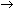

|
|||||||||||||||||||
|
|||||||||||||||||||
|
|||||||||||||||||||
| Journal Home | |
| Current Issue | |
| AOP | |
| Archive | |
| THIS ARTICLE | |
| Download PDF | |
| References | |
| Export citation | |
| Export references | |
| Send to a friend | |
| More articles like this | |
| Table of Contents | |
| < Previous | Next > | |
| Nature 350, 508 - 511 (11 April 1991); doi:10.1038/350508a0 |
|
Serine phosphorylation-independent downregulation of cell-surface CD4 by nef
J. Victor Garcia & A. Dusty Miller
Program in Molecular Medicine, Fred Hutchinson Cancer Research Center, Seattle, Washington 98104, USA
A DECLINE in the T-cell population usually marks the onset of progressive immunological disease in individuals infected with the human immunodeficiency virus (HIV). Because CD4+ cells help to coordinate efficient immune responses, some of the defects in the immune function in advanced cases of AIDS may be explained by the disappearance of these cells. Therefore, an understanding of the mechanisms used by HIV to induce the reduction of CD4+ cells is important. Here we use a Moloney murine leukaemia virus-based retroviral vector in order to express the nef gene of HIV-1 in three lymphocytic cell lines expressing CD4. In all cases we find that cell-surface CD4 expression is inversely related to nef expression. However, nef does not alter steady-state levels of CD4 RNA or CD4 protein. Also, nef can downregulate a CD4 triple mutant (Ser  Ala) that is neither phosphorylated nor down-regulated by phorbol esters, indicating that nef is acting by a different mechanism.
| 1. | Dalgleish, A. G. et al Nature 312, 763−767 (1985). | ChemPort | |
| 2. | Haseltine, W. A., Terwilliger, D. F., Rosen, C. A. & Sodroski, J. G. in Retrovirus Biology and Human Disease, (eds Gallo, R. C. & Wong-Staal, F.) (Dekker, New York, 1990). |
| 3. | Pavlakis, G. M. & Felberg, B. K. New Biol. 2, 20−31 (1990). | PubMed | ChemPort | |
| 4. | Ratner, L. et al. Nature 313, 277−284 (1985). | Article | PubMed | ISI | ChemPort | |
| 5. | Franchini, G., Robert-Guroff, M., Ghrayeb, J., Chang, N. T. & Wong-Staal, F. Virology 155, 593−599 (1986). | Article | PubMed | ISI | ChemPort | |
| 6. | Ahmad, N. & Venkatesan, S. Science 241, 1481−1485 (1988). | PubMed | ISI | ChemPort | |
| 7. | Kim, S., Ikeuchi, K., Byrn, R., Groopman, J. & Baltimore, D. Proc. natn. Acad. Sci. U.S.A. 86, 9544−9548 (1989). | ChemPort | |
| 8. | Hammes, S., Dixon, E., Malim, M., Cullen, B. & Greene, W. C. Proc. natn. Acad. Sci. U.S.A. 86, 9549−9553 (1989). | ChemPort | |
| 9. | Guy, B. et al. Nature 330, 266−269 (1987). | Article | PubMed | ISI | ChemPort | |
| 10. | Cheng-Mayer, C., Iannello, P., Shaw, K., Luciw, P. A. & Levy, J. A. Science 246, 1629−1632 (1989). | PubMed | ChemPort | |
| 11. | Miller, A. D. & Rosman, G. Biotechniques 7, 980−990 (1989). | PubMed | ISI | ChemPort | |
| 12. | Hoxie, J. A., Matthews, D. M., Callahan, K. J., Cassel, D. L. & Cooper, R. A. J. Immun. 137, 1194−1201 (1986). | PubMed | ChemPort | |
| 13. | Acres, R. B., Conlon, P. J., Mochizoki, D. Y. & Gallis, B. J. biol. Chem. 261, 16210−16214 (1986). | PubMed | ChemPort | |
| 14. | Shin, J., Doyle, C., Yang, Z., Kappes, D. & Strominger, J. L. EMBO J. 9, 425−434 (1990). | PubMed | ChemPort | |
| 15. | Fauci, A. S. Science 239, 617−622 (1988). | PubMed | ISI | ChemPort | |
| 16. | Gallo, R. C. J. acq. Immun. Defic. Synd. 3, 380−389 (1990). | ChemPort | |
| 17. | Temin, H. M., Keshet, E. & Weller, S. K. in Cold Spring Harb. Symp. quant. Biol. Vol. XLIV 773−778 (Cold Spring Harbor Laboratory, New York, 1980). |
| 18. | Weller, S. K., Joy, A. E. & Temin, H. M. J. Virol. 33, 494−506 (1980). | PubMed | ISI | ChemPort | |
© 1991 Nature Publishing Group
Privacy Policy